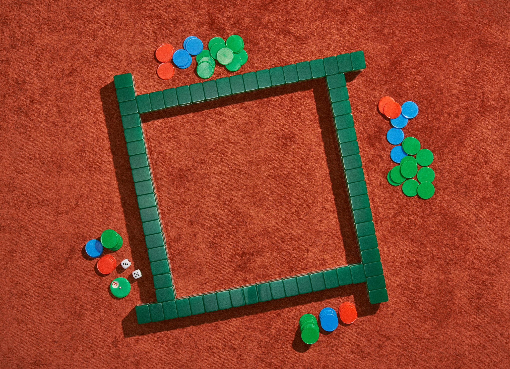
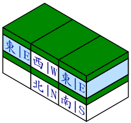
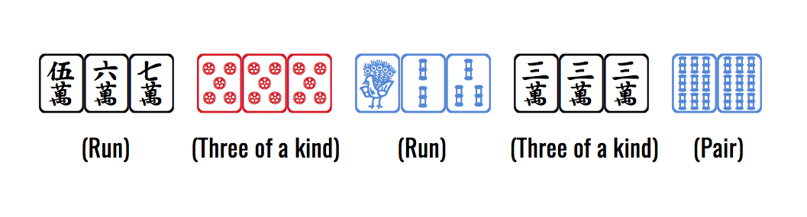

Each player builds a stack of tiles 2 tiles high and 1 tiles long. Keep these tiles face down and assemble all the tiles in a square with this formation:
Decide a player to go first and each player, going clockwise, takes turns removing one tile from that player’s stack and adding it to their hand. Continue removing tiles until every player has 13 tiles. You must go downward when taking tiles. Finish removing the stack of two before moving on to the next stack. The image below shows how players should remove tiles:
In this image, the first player takes the tile labeled "east" on the right, then the next player takes the "south" tile, then "west", "north", "east", and so on until every player has 13 tiles.
Take a tile from the remaining stack, following the same rule as explained in setup. Decide whether or not you want to keep or discard the tile.
If you wish to keep it, you may put it into your hand and discard a tile from your hand. Essentially, you must always have 13 tiles in your hand.
On your turn, you may choose not to take from the stack and instead take the tile that was just discarded and put it into your hand, so long as it creates a three of a kind. You must discard a tile reveal your three of a kind for the rest of the game.
You can also take the tile that was just discarded and put it into your hand in order to create a straight. You can only do this if the discarded tile belonged to the player going directly before you. Discard a tile and reveal your straight for the rest of the game.
Should two players attempt to take a discarded tile, the player creating a three of a kind takes priority.
The object of the game is to be the first player to obtain any four sets and a pair. Note that this will require 14 tiles instead of 13. In order to win, you must draw your winning tile. Reveal your hand and DO NOT discard a tile at the end of your turn.
Below shows an example of a winning hand:
In rare occasions, you might create a four of a kind (four of the same tile). If you created the four of a kind, regardless of whether the tile was drawn from the stack or the tile was previously discarded, you must reveal it. Afterward, discard a tile and take an extra turn.
This effect does not occur if you started with a four of a kind, and it is regarded as a three of a kind (plus a "useless" tile).